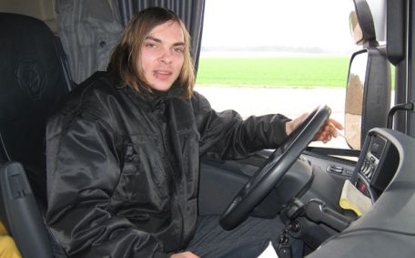

Personas
Es gibt viele Menschen, die die Autobahnen nutzen, sei es aus privaten oder geschäftlichen Gründen. Und jeder kennt das Problem, egal ob in der Hitze Sommers, der Kälte des Winters oder wegen Nebel und Regen in Frühling und Hebst, wenn dann noch die Autobahnen voll sind und man jederzeit das Gefühl hat mit einem Stau rechnen zu müssen, hat man kein wirkliches Interesse daran mehr weiterzufahren. Deswegen ist es interessant, wenn man schon vorher weiß, wenn man einen Trend kennt, wie die Verkehrslage aussieht. Ebenso für das Planen von Pausen, hilft es, wenn man weiß wie viele Fahrer unterwegs sein könnten, denn wenn die Autobahn besonders voll ist, lohnt es sich eher nicht abzufahren, da die Chance höher ist, dass auch der Rasthof sehr voll ist.
Stefan Böhm
Stefan (45) ist Geschäftsmann einer eigenen kleinen Firma, verheiratet und hat 2 Kinder im Teenageralter. Beruflich zog er vor 20 Jahren von Linz nach Salzburg. Seit sein Vater vor 5 Jahren verstarb, lebt seine Mutter alleine im Eigenheim in Linz und die Familie besucht sie regelmäßig. Vor wenigen Wochen erlitt sie jedoch einen Infarkt, Stefan hat sich vorgenommen unter der Woche regelmäßig zu ihr zu fahren, um ihr mit Haus und Garten zu helfen. Eingeschränkt durch seine Arbeit muss er jedoch an einem Tag hin und zurückfahren, da die Fahrt recht lange dauert und er sich nicht immer einen ganzen Tag freinehmen kann. Um seine Dienstzeiten zu planen, will sich Stefan mit den Verkehrslagen seiner Strecke auseinander setzen, damit er besser entscheiden kann, wann es sich am besten eignet früher Feierabend zu machen, um seine Mutter besuchen zu fahren.
Christian Müller

Christian ist 22 Jahre alt, Lastwagenfahrer und fährt seit 2 Jahre für ein Möbelgeschäft die immer gleiche Strecke, aufgrund seiner Pünktlichkeit und Zuverlässigkeit hat die Firma beschlossen ihn für weitere Filialen und ebenso für Aufträge von kleineren Geschäftspartnern fahren zu lassen. Da seine Familie und Freunde in seiner Nähe wohnen, kennt Christian nicht viele Autobahnstrecken. Da er nun die unterschiedlichsten Strecken fahren muss, will er sich bereits Wissen über die Autobahnen aneignen, damit er weiß, wie und ob er Pausen plant.